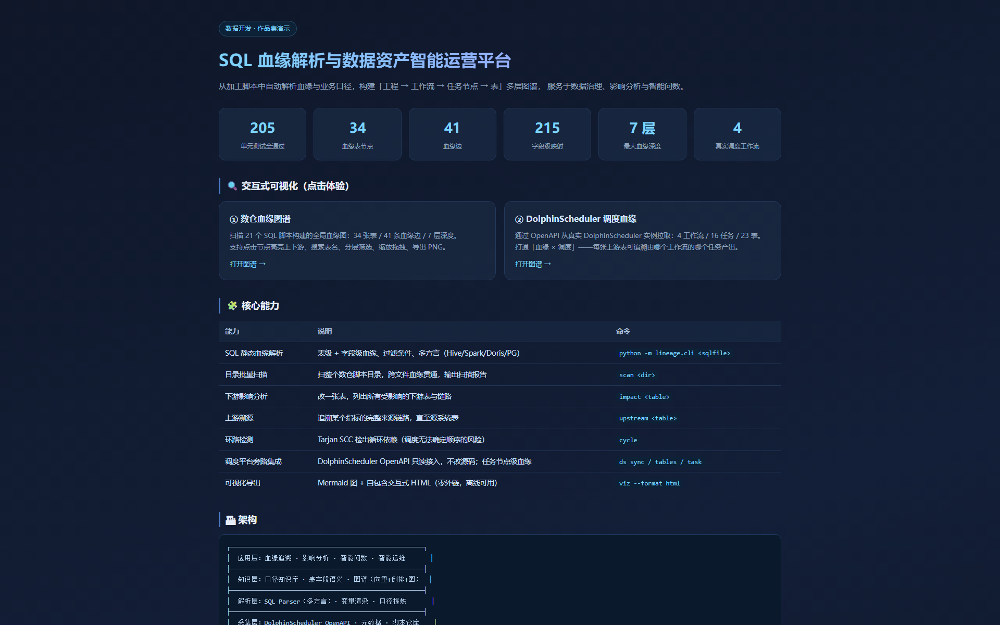
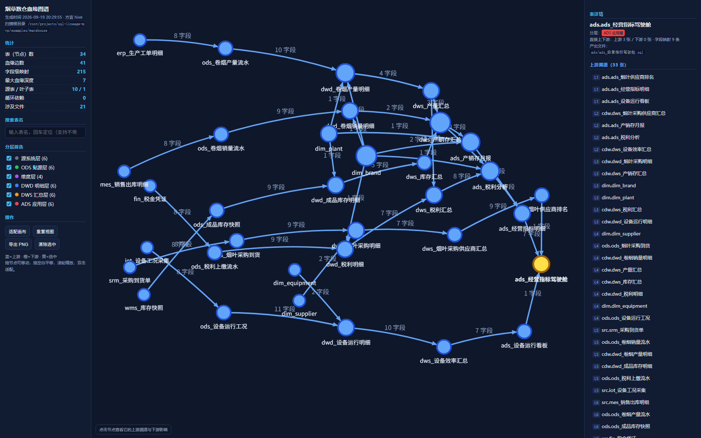
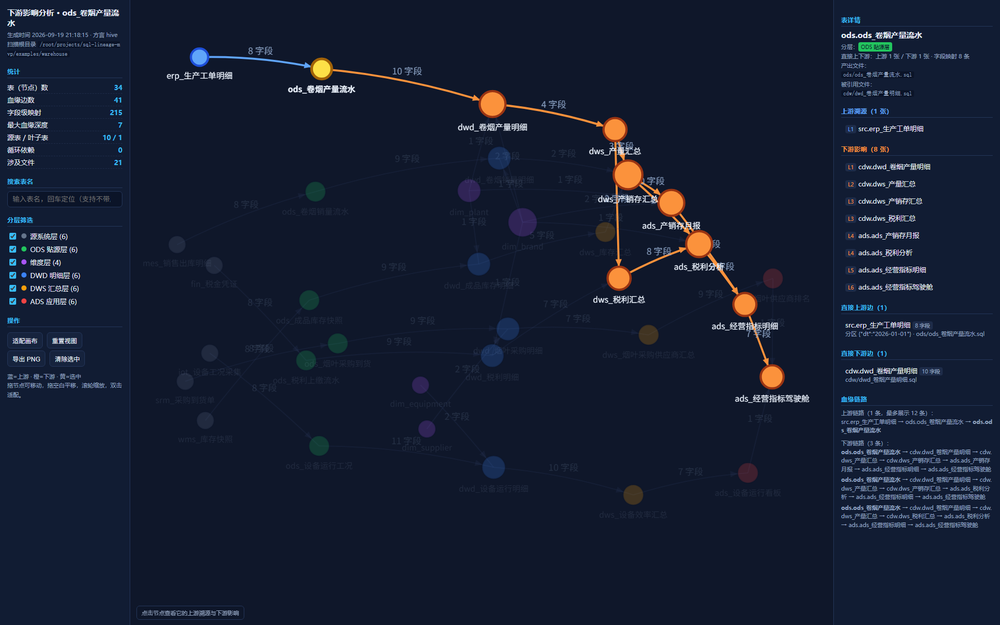
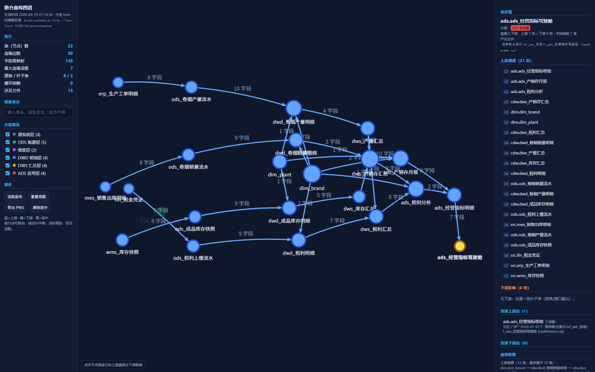

从加工脚本中自动解析血缘与业务口径，构建「工程 → 工作流 → 任务节点 → 表」多层图谱， 服务于数据治理、影响分析与智能问数。




| 能力 | 说明 | 命令 |
|---|---|---|
| SQL 静态血缘解析 | 表级 + 字段级血缘、过滤条件、多方言（Hive/Spark/Doris/PG） | python -m lineage.cli <sqlfile> |
| 目录批量扫描 | 扫整个数仓脚本目录，跨文件血缘贯通，输出扫描报告 | scan <dir> |
| 下游影响分析 | 改一张表，列出所有受影响的下游表与链路 | impact <table> |
| 上游溯源 | 追溯某个指标的完整来源链路，直至源系统表 | upstream <table> |
| 环路检测 | Tarjan SCC 检出循环依赖（调度无法确定顺序的风险） | cycle |
| 调度平台旁路集成 | DolphinScheduler OpenAPI 只读接入，不改源码；任务节点级血缘 | ds sync / tables / task |
| 可视化导出 | Mermaid 图 + 自包含交互式 HTML（零外链，离线可用） | viz --format html |
┌──────────────────────────────────────────────────────┐ │ 应用层：血缘追溯 · 影响分析 · 智能问数 · 智能运维 │ ├──────────────────────────────────────────────────────┤ │ 知识层：口径知识库 · 表字段语义 · 图谱（向量+倒排+图） │ ├──────────────────────────────────────────────────────┤ │ 解析层：SQL Parser（多方言）· 变量渲染 · 口径提炼 │ ├──────────────────────────────────────────────────────┤ │ 采集层：DolphinScheduler OpenAPI · 元数据 · 脚本仓库 │ └──────────────────────────────────────────────────────┘
git clone git@github.com:Bumpc6k/sql-lineage-mvp.git cd sql-lineage-mvp python -m venv .venv && .venv/bin/pip install -r requirements.txt # 扫描示例数仓并构建血缘图 .venv/bin/python -m lineage.cli scan examples/warehouse --graph-out graph.json # 影响分析：改这张表会波及谁 .venv/bin/python -m lineage.cli impact ods.ods_卷烟产量流水 --graph graph.json # 导出交互式 HTML .venv/bin/python -m lineage.cli viz graph.json --format html --out lineage.html
| 阶段 | 内容 | 状态 |
|---|---|---|
| P1 | SQL 静态解析（表级/字段级血缘 · 多方言） | ✅ 已完成 |
| P2 | 血缘图引擎 + 目录扫描 + 影响分析 + 可视化 | ✅ 已完成 |
| P3 | DolphinScheduler 旁路集成（任务级血缘） | ✅ 已完成 |
| P4 | 业务口径提炼 + 知识库 + 智能问数（Text-to-SQL） | 🚧 规划中 |
| P5 | 智能运维：异常检测 · SQL 反模式与优化建议 | 📋 规划中 |